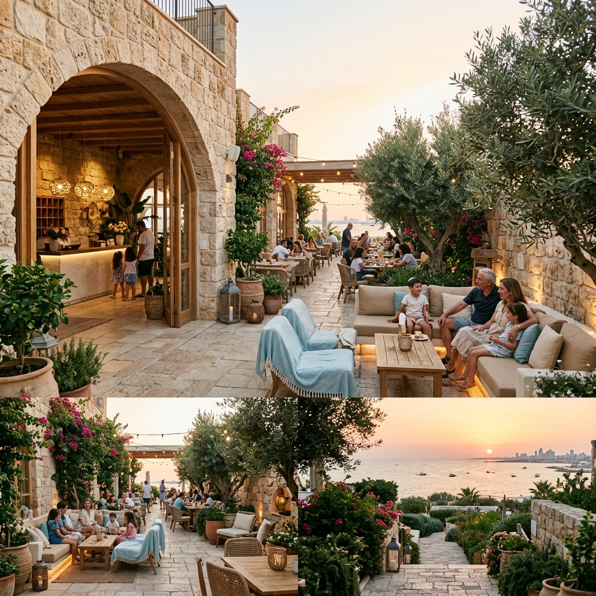

אודות המלון
הכירו את מלון מיעמי אשדוד – הבית שלכם לאירוח משפחתי חם, שמחות בפרטיות מלאה, כשרות מהודרת וסמיכות לים.
מלון מיעמי - מורשת של הכנסת אורחים חמה
במלון מיעמי אנו מאמינים שאירוח אמיתי מתחיל בגובה העיניים ומהלב. מזה עשרות שנים שאנו מהווים בית חם ועוטף למשפחות, זוגות ואורחים מכל רחבי הארץ המחפשים מקום נוח, נקי ואמין המעניק תמורה מעולה למחיר וסמיכות מושלמת לטיילת ולחוף הים של אשדוד.
כבר עשרים שנה שאני מגיע בכל בוקר למלון מיעמי, מכין את הקפה של הבוקר ומריח את בריזת הים המרעננת שנמצאת ממש מעבר לפינה. ב-20 השנים האלו ראיתי הכל – ראיתי תינוקות שהגיעו אלינו בתוך עריסה לשבת ברית, ואחרי שלוש-עשרה שנים חזרו אלינו מלווים בהתרגשות העצומה של בר המצווה והעלייה לתורה. הכוח של מלון מיעמי היה ונשאר בפשטות שלו – אנחנו לא מנסים להיות מלון פאר מנוכר עם גינונים מלאכותיים. אנחנו מציעים מקום נקי, משפחתי ואמין. כשהמשפחה שלכם מגיעה לחגוג שבת חתן או שמחה, היא מקבלת יחס של בני בית. בשביל זה הקמנו את מערך האירוח הייחודי שלנו שכולל שני בתי כנסת פרטיים ומפוארים ושני חדרי אוכל נפרדים. זה מאפשר לכם לחגוג בפרטיות מוחלטת, ללא ערבוב עם אורחים אחרים. אצלנו המטבח פועל תחת כשרות למהדרין קפדנית בהשגחת הרב מחפוד (בד"ץ יורה דעה), דבר שמעניק שקט נפשי מלא לכל האורחים. יחד עם האוכל העשיר והביתי שאנחנו מכינים באהבה, החניה החינמית הצמודה והמיקום המצוין סמוך לים – אני גאה להזמין אתכם להיות חלק מהמשפחה שלנו.


שירות מכל הלב
הצוות שלנו כאן כדי להעניק לכם יחס אישי וחם, מרגע ההזמנה ועד רגע העזיבה.
מצוינות ללא פשרות
מתחייבים לסטנדרטים הגבוהים ביותר של ניקיון, קולינריה ותחזוקה בכל פינה במלון.
שימור המסורת
בית חם לשומרי מסורת, עם כשרות מהודרת ואווירת שבת קדושה ושלווה.

פעימות הלב של הים
מלון מיעמי ממוקם במיקום מצוין ומנצח באשדוד – במרחק פסיעות ספורות מטיילת החוף היפהפייה. השילוב בין הבריזה המרעננת והניחוח המרגיע של הים לבין הקרבה לכל מוקדי העניין, בתי הכנסת והמרכזים הקהילתיים בעיר, הופך אותנו לבחירה המושלמת לנופש או אירוע.
- check_circle מרחק הליכה קצר מחוף הים המוסדר
- check_circle ליהנות מהבריזה המרעננת של הים
- check_circle גישה נוחה למרכזי קניות ובתי כנסת
כשרות למהדרין ופרטיות מלאה - שקט נפשי מלא
שני בתי כנסת פרטיים
בתי כנסת מפוארים המוקצים בלעדית למשפחה שלכם, לתפילות באווירה מרוממת ונוחה ללא ערבוב עם אורחים אחרים.
שני חדרי אוכל נפרדים
המשפחה שלכם אוכלת יחד בפרטיות מוחלטת בחדר אוכל ייעודי המוקצה במיוחד עבורכם לאורך כל השבת.
כשרות למהדרין הרב מחפוד
מטבח המלון והקייטרינג פועלים תחת כשרות למהדרין קפדנית של בד"ץ יורה דעה בראשות הרב שלמה מחפוד שליט"א.